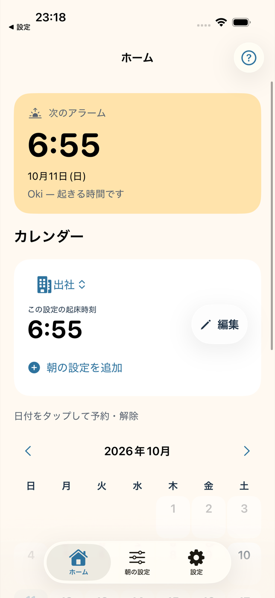

INDEPENDENT DEVELOPER
昨日を思い出す。明日の朝を考える。
日々の小さな問いから、iPhoneアプリをつくっています。
01 / LOOK BACK
最後にやったの、いつ？
あいまいな記憶も、そのまま残す。
02 / LOOK AHEAD

明日の朝を、逆算する。
開発中
ABOUT
暮らしの中にある、見過ごされがちなことを見つめ直し、シンプルで長く使えるプロダクトを目指しています。